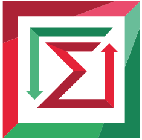

Министерство науки и высшего образования
Российской Федерации
Федеральное государственное бюджетное
образовательное учреждение высшего образования
«НОВОСИБИРСКИЙ ГОСУДАРСТВЕННЫЙ ТЕХНИЧЕСКИЙ УНИВЕРСИТЕТ»
Кафедра проектирования технологических машин
Лабораторная работа № 3
по дисциплине «Основы Web-грограммирования»
Разработка чата
|  | |
| Факультет: | ПМИ |
| Группа: | ПМИ-71 |
| Бригада: | 7 |
| Студент: | Лысокобылко Олеся |
| Преподаватель: | Цыгулин Алексей Александрович |
Новосибирск 2019
Разработать чат.
<!DOCTYPE html>
<html lang="ru">
<head>
<meta charset="UTF-8">
<meta name="viewport" content="width=device-width, initial-scale=1.0">
<title>Чат</title>
<style>
body{
font-family: URW Chancery L, cursive;
color: #000000;
background-repeat: no-repeat;
background-attachment: fixed;
background-size: 100% 100%;
}
.form-control{
display:block;
width:50%;
padding: 10px 50px;
font-size:1rem;
}
</style>
</head>
<body>
<h2>Чат</h2>
<p>Укажите ваше имя и начинайте переписку</p>
<h3>Форма сообщений</h3>
<form id="messForm">
<label for="name">Имя</label>
<input type="text" name="name" id="name" placeholder="Введите имя" class="form-control">
<br>
<label for="message">Сообщение</label>
<textarea name="message" id="message" class="form-control" placeholder="Введите сообщение"></textarea>
<br>
<input type="submit" value="Отправить" class="btn btn-danger">
</form>
<h3>Сообщения</h3>
<!-- Вывод всех сообщений будет здесь -->
<div id="all_mess"></div>
<!-- Подключаем jQuery, а также Socket.io -->
<script src="https://ajax.googleapis.com/ajax/libs/jquery/3.3.1/jquery.min.js"></script>
<script src="/socket.io/socket.io.js"></script>
<script>
// У каждого пользователя будет случайный стиль для блока с сообщенями,
// поэтому в этом кусочке кода мы получаем случайные числа
var min = 1;
var max = 6;
var random = Math.floor(Math.random() * (max - min)) + min;
// Устаналиваем класс в переменную в зависимости от случайного числа
// Эти классы взяты из Bootstrap стилей
var alertClass;
switch (random) {
case 1:
alertClass = 'secondary';
break;
case 2:
alertClass = 'danger';
break;
case 3:
alertClass = 'success';
break;
case 4:
alertClass = 'warning';
break;
case 5:
alertClass = 'info';
break;
case 6:
alertClass = 'light';
break;
}
// Функция для работы с данными на сайте
$(function() {
// Включаем socket.io и отслеживаем все подключения
var socket = io.connect();
// Делаем переменные на:
var $form = $("#messForm"); // Форму сообщений
var $name = $("#name"); // Поле с именем
var $textarea = $("#message"); // Текстовое поле
var $all_messages = $("#all_mess"); // Блок с сообщениями
// Отслеживаем нажатие на кнопку в форме сообщений
$form.submit(function(event) {
// Предотвращаем классическое поведение формы
event.preventDefault();
// В сокет отсылаем новое событие 'send mess',
// в событие передаем различные параметры и данные
socket.emit('send mess', {mess: $textarea.val(), name: $name.val(), className: alertClass});
// Очищаем поле с сообщением
$textarea.val('');
});
// Здесь отслеживаем событие 'add mess',
// которое должно приходить из сокета в случае добавления нового сообщения
socket.on('add mess', function(data) {
// Встраиваем полученное сообщение в блок с сообщениями
// У блока с сообщением будет тот класс, который соответвует пользователю что его отправил
$all_messages.append("<div class='alert alert-" + data.className + "'><b>" + data.name + "</b>: " + data.mess + "</div>");
});
});
</script>
</body>
</html>
// Подключение всех модулей к программе
var express = require('express');
var app = express();
var server = require('http').createServer(app);
var io = require('socket.io').listen(server);
// Отслеживание порта
server.listen(3000);
// Отслеживание url адреса и отображение нужной HTML страницы
app.get('/', function(request, respons) {
respons.sendFile(__dirname + '/chat.html');
});
// Массив со всеми подключениями
connections = [];
// Функция, которая сработает при подключении к странице
// Считается как новый пользователь
io.sockets.on('connection', function(socket) {
console.log("Успешное соединение");
// Добавление нового соединения в массив
connections.push(socket);
// Функция, которая срабатывает при отключении от сервера
socket.on('disconnect', function(data) {
// Удаления пользователя из массива
connections.splice(connections.indexOf(socket), 1);
console.log("Отключились");
});
// Функция получающая сообщение от какого-либо пользователя
socket.on('send mess', function(data) {
// Внутри функции мы передаем событие 'add mess',
// которое будет вызвано у всех пользователей и у них добавиться новое сообщение
io.sockets.emit('add mess', {mess: data.mess, name: data.name, className: data.className});
});
});